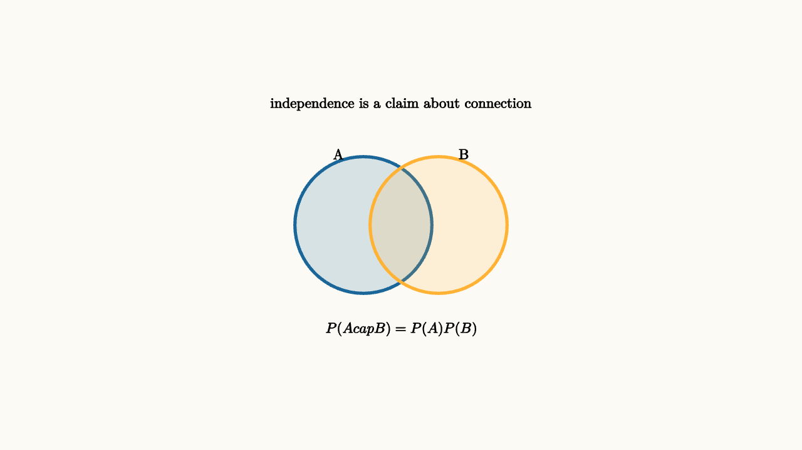

Independence Is A Structural Assumption
Two events are independent when learning that one happened does not change the probability of the other. The algebraic test is
That multiplication rule is powerful. It is also easy to misuse. Independence is a statement about the structure of the situation.
The word "structure" means the story has to justify the algebra. If you flip a well-mixed coin twice, the first flip leaves the second flip with the same chance of heads. If you pick two students from the same household, their school absences may be linked by shared transportation, shared illness, or shared schedules. Randomness by itself does not guarantee independence.

source
background = [0.985, 0.98, 0.955, 1]
camera = Camera(4.8b)
mesh venn = block {
. fill{alpha{0.16} BLUE} stroke{BLUE, 3} center{[-0.45, 0, 0]} Circle(0.82)
. fill{alpha{0.16} ORANGE} stroke{ORANGE, 3} center{[0.45, 0, 0]} Circle(0.82)
. center{[-0.75, 0.85, 0]} Text("A", 0.62)
. center{[0.75, 0.85, 0]} Text("B", 0.62)
. center{[0, -1.25, 0]} Tex("P(A\\cap B)=P(A)P(B)", 0.62)
. center{[0, 1.45, 0]} Text("independence is a claim about connection", 0.62)
}
"independence rule"
play Fade(0.6)Rolling two fair dice separately is a good independence model. The first die does not mechanically affect the second. Drawing two cards from a deck without replacement is different. If the first card is an ace, the probability that the second card is an ace changes.
The card example is a small version of a common modeling trap. The first draw changes the population that remains. The same idea appears in quality control, hiring, sampling surveys, and raffles. Once one item has been selected, the remaining items have a slightly different composition. With a very large population, the dependence may be tiny. With a small deck, it is visible immediately.
Everyday reasoning often fails by assuming independence where there is shared cause. If many flights are delayed by the same storm, their delays are correlated. If several devices fail because of the same power surge, their failures are correlated. If two symptoms come from the same illness, they are correlated.
source
param link = 0.0
background = [0.985, 0.98, 0.955, 1]
camera = Camera(4.8b)
let Events = |link| block {
. fill{alpha{0.14} BLUE} stroke{BLUE, 3} center{[-1.25, 0, 0]} Circle(0.32)
. fill{alpha{0.14} ORANGE} stroke{ORANGE, 3} center{[1.25, 0, 0]} Circle(0.32)
. center{[-1.25, 0, 0]} Text("A", 0.62)
. center{[1.25, 0, 0]} Text("B", 0.62)
. stroke{GREEN, 3} Line(start: [-0.9, 0, 0], end: [-0.9 + 1.8 * link, 0, 0])
. center{[0, 1.35, 0]} Text("shared causes break multiplication", 0.62)
}
"separate"
mesh events = Events(link: $link)
play Fade(0.5)
"linked"
link = 1.0
events = Events(link: $link)
play Lerp(1.0)Conditional probability gives the safer language:
Independence is the special case where $P(B\mid A)=P(B)$.
This safer formula also gives a good classroom habit. Start with $P(A)P(B\mid A)$, then simplify only if the conditional probability really equals the original probability. The order can be reversed as $P(B)P(A\mid B)$, which is the same joint probability described from the other event first.
Independence is especially fragile in data. A spreadsheet may contain thousands of rows, yet rows from the same city, classroom, server, or family can share hidden influences. Treating them as independent makes uncertainty look smaller than it is. The model then sounds more confident precisely where it should be more careful.
A good question to ask is, "what could make these outcomes move together?" Weather, deadlines, shared suppliers, social influence, and common measurement errors are all candidates. Once a shared source is named, the multiplication rule needs evidence rather than habit.
The lesson to keep: multiply probabilities only after checking the story. Random-looking events can still be connected through time, shared causes, constraints, or selection effects.